Making static maps and processing geodata with GIS
Introducing QGIS
GQIS is the leading free, open source Geographic Information Systems (GIS) application. It is capable of sophisticated geodata processing and analysis, and also can be used to design publication-quality data-driven maps.
Launch QGIS, and you should see a screen like this:
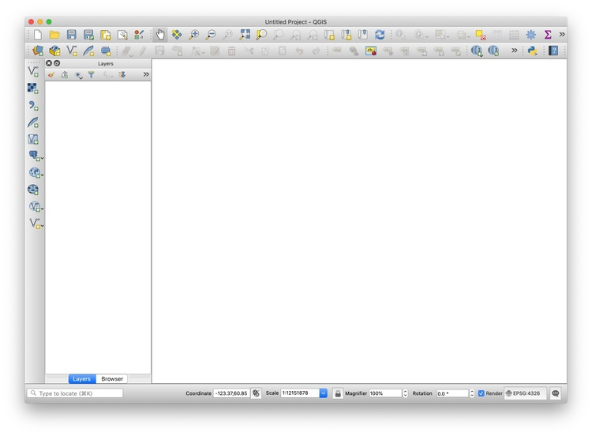
If your screen looks different, select View>Panels from the top menu and check the options as follows:
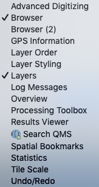
Then select View>Toolbars and check the options as follows:
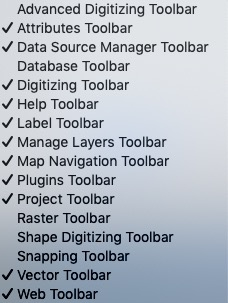
The data we will use today
Download the data from this session from here, unzip the folder and place it on your desktop. It contains the following folders and files:
seismicShapefile with data on the risk of a damaging earthquake in 2018 for the continental United States, from the U.S. Geological Survey.seismic_rawAs above, but not clipped to the coast and borders of the United States.gdp_pcgpd_pc.csvgdp_pc.csvtCSV file with World Bank data on GDP per capita for the world’s nations in 2016, plus ancillary file for QGIS to understand the data types for each field.
ne_50m_admin_0_countries_lakesNatural Earth shapefile with boundary data for the world’s nations.sf_test_addressesShapefile derived from the addresses we geocoded in week 9.quakes.csvThis file isn’t in the folder. Instead, we will
use the U.S. Geological Survey’s Earthquakes Archives API where we will search for all earthquakes since 1960 with a magnitude of 6 or greater that occured witin 6,000 kilometers of the geographic center of the contiguous United States, which this site tells us lies at a latitude of39.828175degrees and a longitude of-98.5795degrees. Type this url into the address bar of your browser:https://earthquake.usgs.gov/fdsnws/event/1/query?starttime=1960-01-01T00:00:00&latitude=39.828175&longitude=-98.5795&maxradiuskm=6000&minmagnitude=6&format=csv&orderby=timeridgecrest_quakes.csvEarthquakes larger than magnitude 2.5 in a bounding box including Ridgecrest, California, from June 20 to July 6, 2019.https://earthquake.usgs.gov/fdsnws/event/1/query.csv?starttime=2019-06-2T20:00:00&endtime=2019-07-06T23:59:59&maxlatitude=50&minlatitude=24.6&maxlongitude=-65&minlongitude=-125&minmagnitude=2.5&orderby=timequery.csvshould download. Rename them and add to theweek10folder. Type this url into the address bar of your browser:
Map seismic risk and earthquakes
Make a choropleth map showing seismic risk for the continental United States
As we discussed in week 9, choropleth maps fill areas with color, according to values in the data.
We will first import the shapefile in the seismic folder.
Select Layer>Add Layer>Add Vector Layer... or click on this icon:
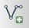
At the dialog box, click the button with the three dots under Source and navigate to the file seismic. It is important that you select the file with the .shp extension. Then click Add and Close and the following map should appear, filled with a random color:

The Layers panel on the left should now show the seismic layer. You can turn off the visibility of any layer by unchecking its box in the Layers panel. This can be useful to see the status of layers that would otherwise be obscured.
These controls allow you to pan and zoom the display:
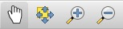
You can focus the display on the full extent of any layer by right-clicking it in the Layers panel and selecting Zoom to layer.
Notice EPSG:4326 at the bottom right. This defines the map projection and datum for the layer.
Right-click on seismic in the Layers panel at left and select Properties>Source. You should see the following under Geometry and Coordinate Reference System:
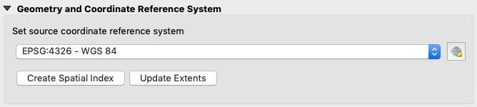
EPSG:4326 and WGS84 mean that this shapefile is in an equirectangular projection, and the WGS84 datum. This is also the default for QGIS if no projection is specified.
We will select another projection for our map later. Click Cancel or OK to close Properties for this layer.
Now we need to color the areas for the sesimic layer by values in the data. Right-click on the layer in the Layers panel and select Open Attribute Table, which corresponds to the .dbf of the shapefile:
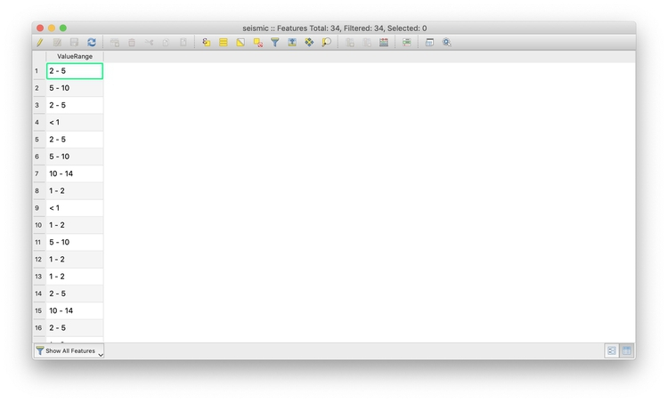
There is one variable, ValueRange, which gives ranges for the percentage chance of experiencing a damaging quake in 2018.
Close the attribute table and open Properties>Symbology for the seismic layer. Select Categorized from the dropdown menu at top, which is the option to color data according to values of a categorical variable, and then select ValueRange under Column.
(Note, although these values are percentages, they have already been binned into categories in this data. If we were coloring by a continuous variable that had not already been binned, we would select Graduated and select values for the bins. See this previous class for an example.)
Click the Classify button and the values in the data will be assigned random colors:
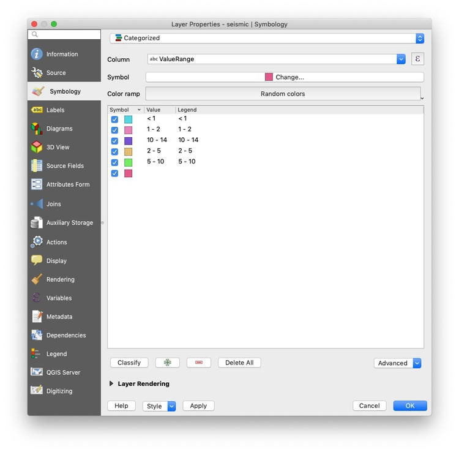
Notice that the range 10 - 14 is out of order, and we also have a blank range at the bottom. First select this blank and click the red minus symbol to remove it. Now click and drag the range 10 - 14 to the correct position.
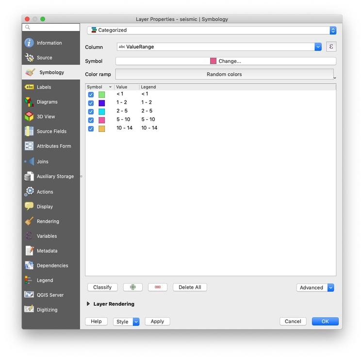
Now click on the Color ramp dropdown menu, select Create New Color Ramp, and at the next dialog box select Catalog: ColorBrewer:
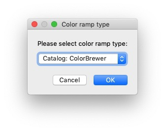
Select the ColorBrewer Reds palette, click OK, and the map should look like this:
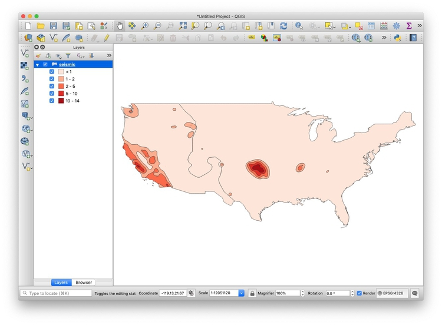
Next we’ll remove the black outlines around the polygons. Open Properties>Symbology again, and click on the colored square under Symbol. Select Simple fill in the dialog box, and change Stroke style to No Pen:
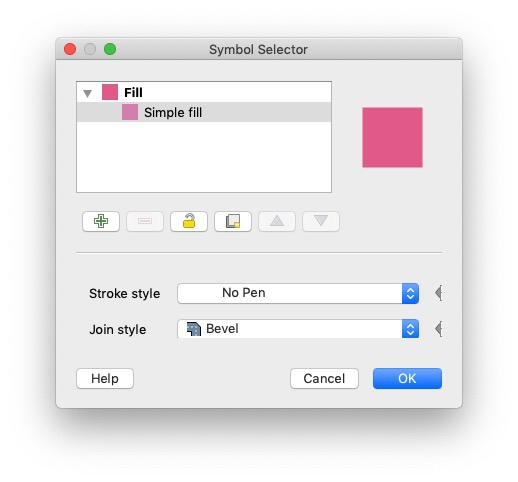
Click on OK at each of the dialog boxes and the map should now look like this:
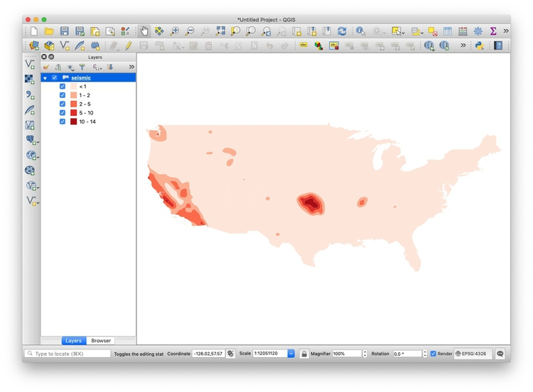
It is also possible to edit the colors for each value individually.
If you are likely to want to style data with the same column headings in the same way in future, click the Style button in Properties>Symbology and select Save Style>QGIS Layer Style File.... This saves the style in QML, which is a variant of XML. When loaded using the Style>Load Style, it will automatically apply the saved styling to future maps.
Now is a good time to give the map a projection: We will use a variant of the Albers Equal Area Conic projection, optimized for maps of North America.
Select Project>Properties>CRS (for Coordinate Reference System) from the top menu, type Albersinto the Filter box and select North_America_Albers_Equal_Area_Conic, which has the code EPSG:102008:
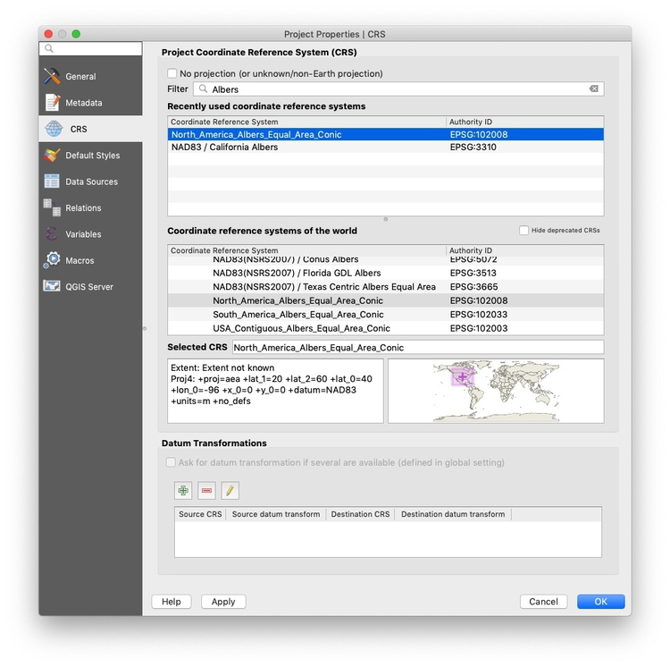
Click OK and the map should reproject. Notice how EPSG:102008 now appears at bottom right. Right-click on the layer and Zoom to Layer so that the view is optimized for this projection:
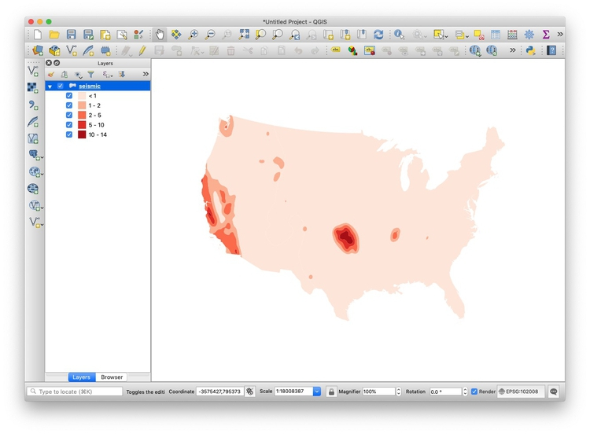
Save the project, by selecting Project>Save from the top menu.
Add a base layer showing land and countries
Add the ne_50m_admin_0_countries_lakes layer, as before. It will appear above our choropleth map:
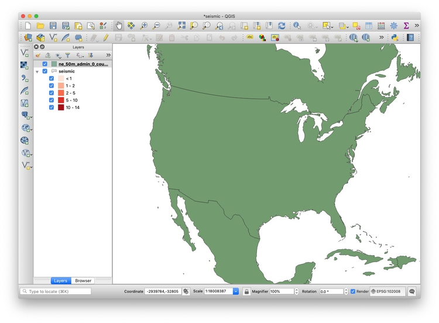
So click and drag the ne_50m_admin_0_countries_lakes layer below the seismic layer in the Layers Panel.
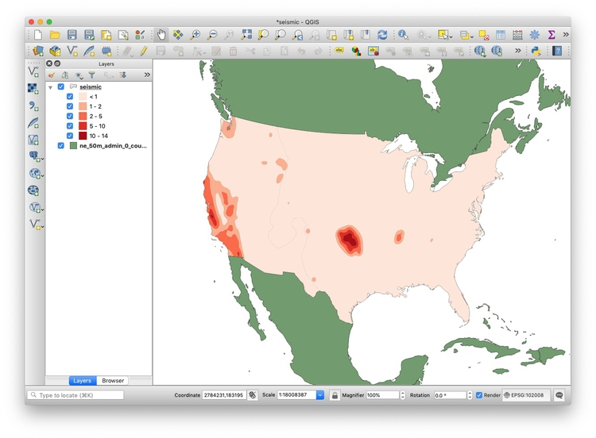
Now open up Properties>Symbology for the ne_50m_admin_0_countries_lakes layer, select Simple fill, and click on the Fill color to change it to #cccccc for a light gray. Also change the Outline to #ffffff for white:
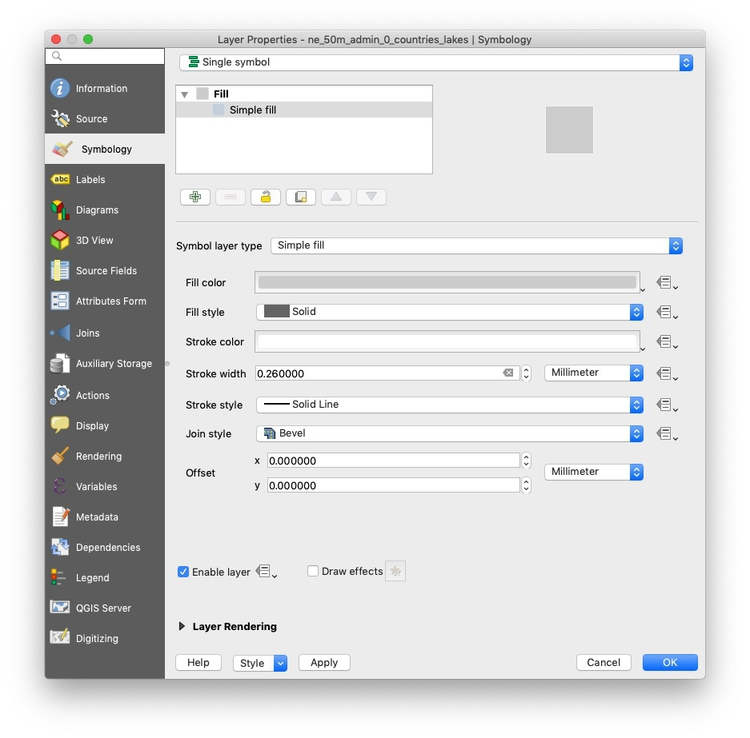
Click OK and the map should look like this:
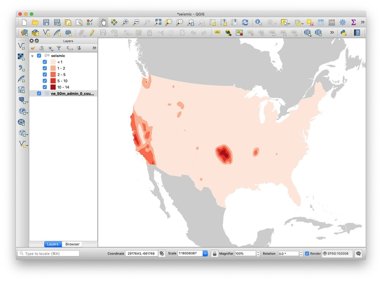
Now select Project>Project Properties...>General, click on the Background color and set it to #f5f5f5 for a lighter gray:
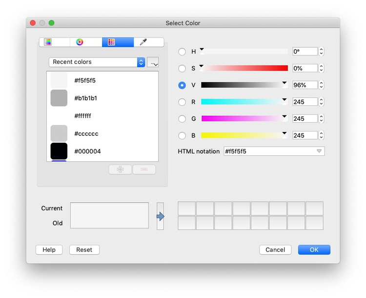
The map should now look like this:
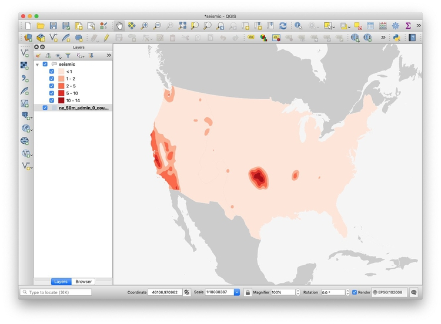
Add the earthquakes layer
To import a CSV or other delimited text file with points described by latitude and longitude coordinates, select Layer>AddLayer>Add Delimited Text Layer from the top menu or click this icon:
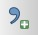
Navigate to the file quakes.csv, and ensure that the dialog box is filled in like this:

If your text file is not a CSV you may have to select the correct delimiter, and if your latitude and longitude fields have other names, you may have to select the X field (longitude) and Y field (latitude) manually.
Important: Do not change the CRS, or projection to the same Albers projection we have set for the project. QGIS will handle the conversion to that projection. Because the data in the CSV file is not yet projected, stick with the default equirectangular projection WGS 84 EPSG:4326 at this dialog box.
Click Add and a large number of points will be added to the map:
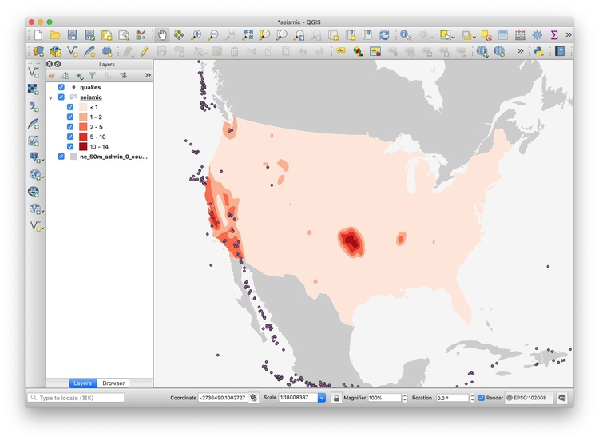
Now we will style these points, giving them a single color but sizing them according to the amount of shaking that quake each caused. Open the attribute table for the quakes layer and notice that it contains a variable called mag, for earthquake magnitude. This is a logarithmic scale, so that a magnitude difference of 1 corresponds to a 10-fold difference in earth movement, as recorded on a seismograph, as this calculator shows:
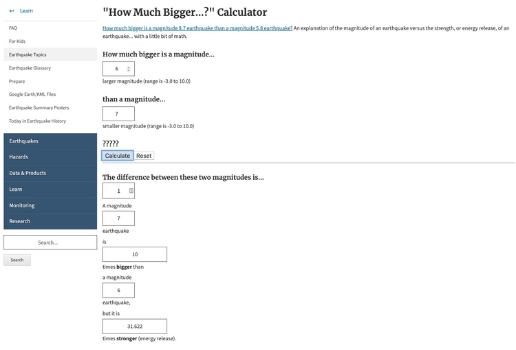
This means that the equation to convert magnitude into the amplitude of the shaking, as recorded on a seismograph, is amplitude = 10^magnitude, or ten raised to the power of magnitude.
So if we want to scale the points according to the actual size of the quake, we need to create a new field in the data for amplitude. To do this, click on the abacus symbol in the top toolbar:
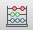
Fill in the dialog box as follows:
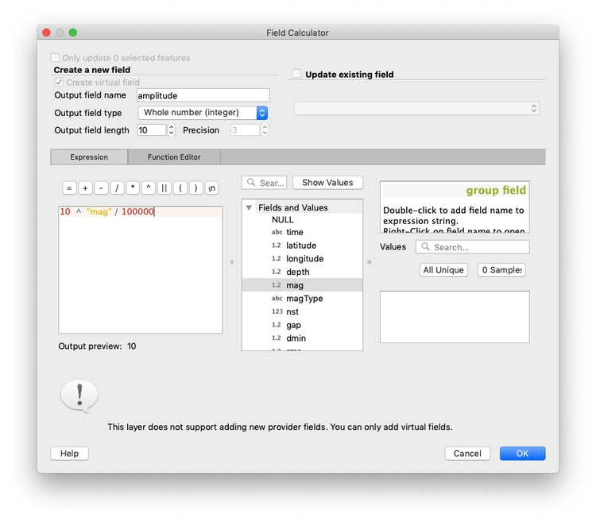
The formula is: amplitude = 10^mag/100000. The final division by 100,000 helps keep the values in a range that is easy to read and understand, which will help when we set the size of the points. The Output preview at the bottom shows the resulting value for the first row in the attribute table. Click OK to create the new amplitude variable.
Select Properties>Symbology for the quakes layer, set the Color to #ffffff for white and the Opacity to 50%:
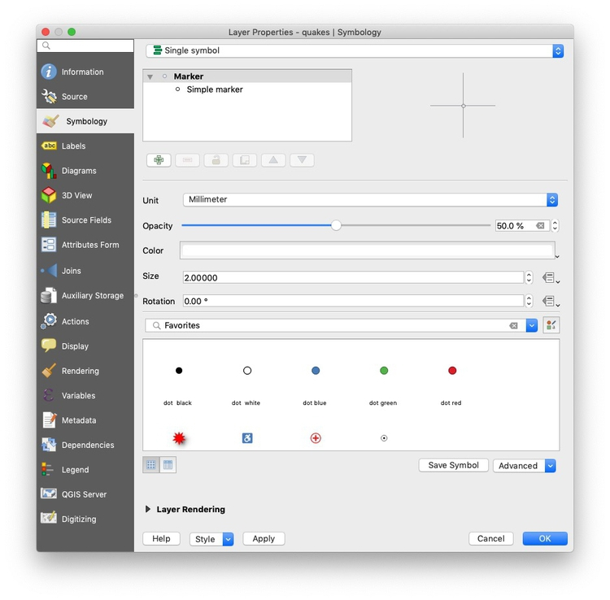
Now click on this icon for Size, and select Assistant...:
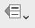
Fill in the dialog box as follows:
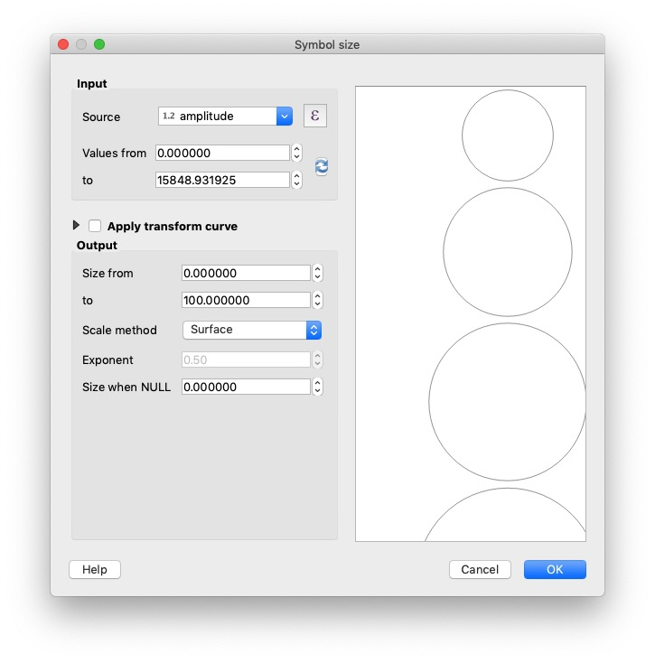
Using the Scale method of Surface will scale the circles by area, according to values in the data; Flannery is a method of scaling that is designed to compensate for the errors people make when estimating the area of circles. You may wish to experiment with this, but I would strongly advise against using Radius, for the reasons we discussed in week 2.
By default, QGIS will select the range of values in the data, when you hit the refresh icon:
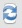
Make sure to set both Size from and Values from to zero to ensure that the area of the points scales accurately according to values in the data.
Click OK until you return to the map, which should now look like this:
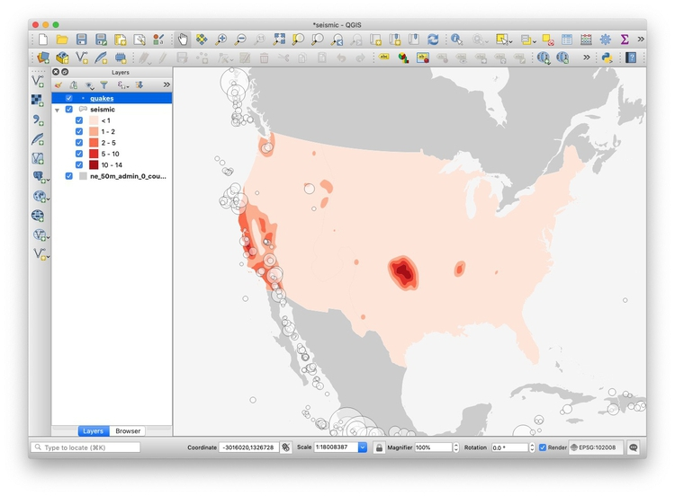
Export the finished map in raster image or vector graphic formats
To export the map as a JPG, PNG, or other raster image format, select Project>Import/Export>Exoert Map To Image... from the top menu.
Exporting using Project>Import/Export>Expert Map To PDF... will give a vector graphic that can be further edited in Adobe Illustrator or another vector graphic editing program.
To export as a vector graphic with other features, select Project>New Print Layout, give the composer an appropriate name and click OK. Set Page size as required, then click the Add new map icon:
Draw a rectangle over the page area, and the map should appear. At this point, you may need to alter the zoom level and position of your map in the main QGIS display to get a pleasing display in the print layout.
Your print layout should now look something like this:
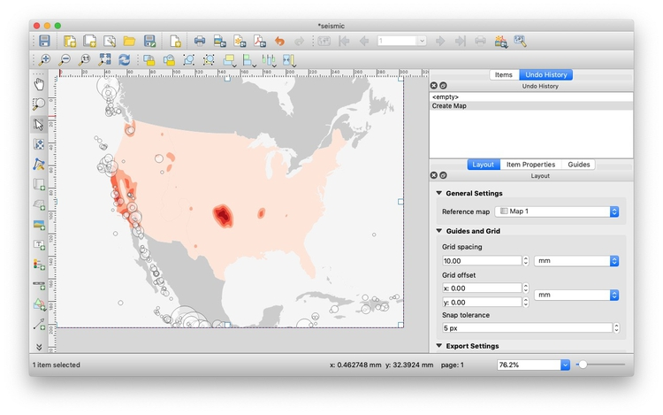
The print layout also allows you to add and edit a legend, by clicking this icon:
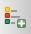
You can also add text and other items. In practice, however, you may find it easier to add legends and labels in Adbobe Illustrator.
The map can be exported in SVG and PDF vector formats by clicking these export icons:
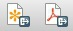
Finally, save the QGIS project.
Make a map with tiled basemap
Open a new project by selecting Project>New from the top menu.
We will now make a map showing the earthquakes that rocked Ridgecrest, California, in July 2019 superimposed on a tiled basemap.
To pull in the baemap, we will use a QGIS plugin called QuickMapServices. Select Plugins>Manage and Install Plugins... from the top menu and search for QuickMapServices:
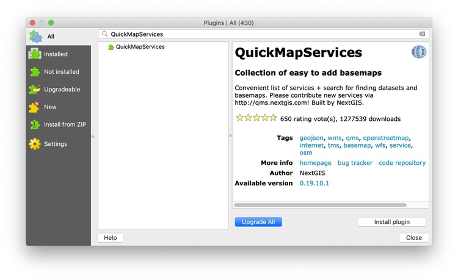
Click Install Plugin, and close the dialog box.
This icon should now appear somewhere in your toolbar:
This plugin allows you to search for layers with basemaps and place labels. We will explore some of the options available in class. Search for ESRI Terrain, click Add when the layer appears and then close the Search QMS panel at right:
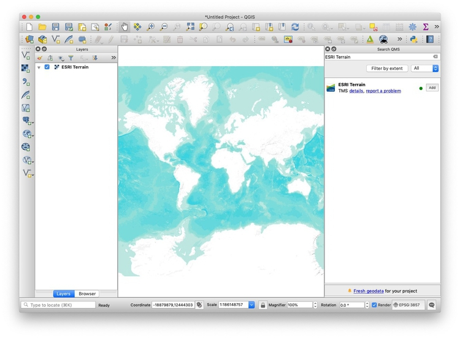
Add the ridgecrest_quakes.csv data as a delimited text layer, as we did for the quakes on the previous map.
Zoom in until you find the swarm of quakes around Ridgecrest:
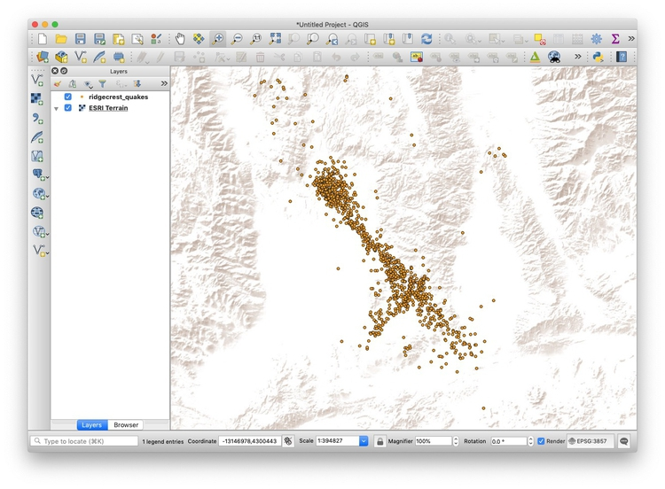
We can now style the quakes as before:
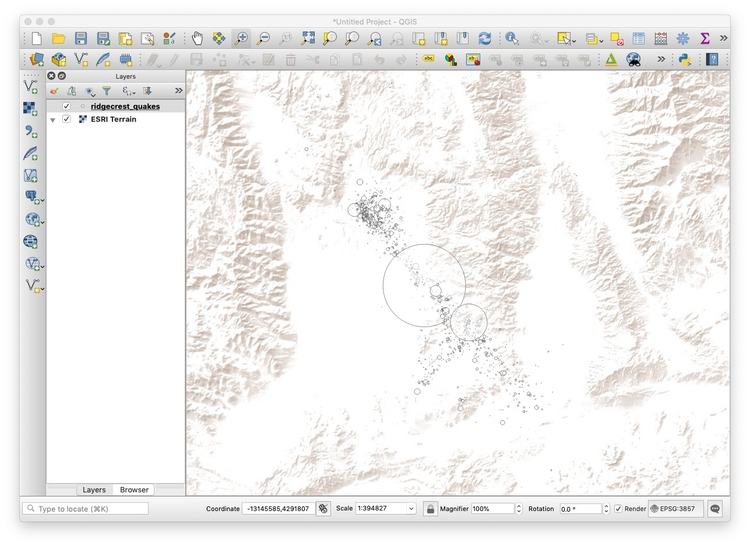
Join external data to a shapefile
Open a new project by selecting Project>New from the top menu.
In this new project, import the ne_50m_admin_0_countries_lakes shapefile. Right-click on it in the Layers panel and select Export>Save Features As ... an save as ESRI shapefile, keeping the default WGS 84 CRS. Browse to the gdp_pc folder, call the new file gdp_pc and check the option to Add saved file to map.
Now remove the original shapefile, by right-clicking on that layer and selecting Remove Layer.
Open the attribute table of the new shapefile and notice that it contains a field called iso_a3, which is a three-letter code for each country, assigned by the International Organization for Standardization.
Now use Add Vector Layer to import the file gdp_pc.csv. (Note that when joining external data in a CSV file to a shapefile, you do not import the file as a delimited text file, as we did previously to display data on a map.)
After import, this file will appear as an isolated table in the Layers panel.
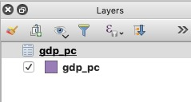
Select it and open the attribute table to view the data, which contains country names, the three-letter country codes, and data on GDP per capita in 2017:

Notice that some cells contain the value -99, which is here being used to designate null values, where there is no data.
The same subfolder with the file also contains the file gdp_pc.csvt. This contains information about the type of data in each field of the CSV file, in this case:
"String","String","Real"
When we make the join, this will tell QGIS what sort of data is in each field of the CSV file. String indicates a string of text, Real indicates numbers that can include decimals, while Integer indicates whole numbers. Without this information, QGIS will treat all of the fields in the file as text.
Close the attribute table once more, right-click on the gdp_pc shapefile and select Properties>Joins. Click the green plus sign and fill in the dialog box as follows to join the CSV file to the shapefile by the iso_a3 three-letter country codes:
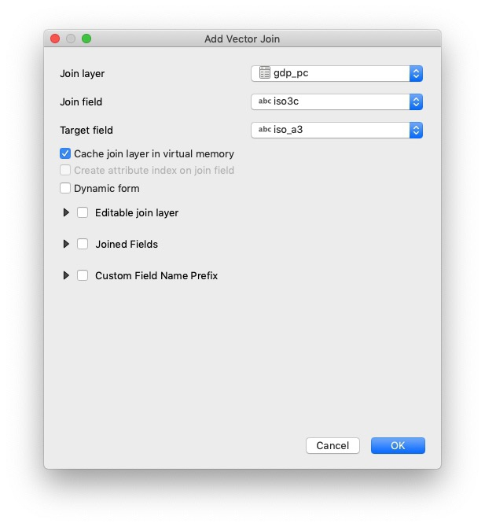
Click OK at each dialog box to complete the join, then open shapefile’s attribute table once more to confirm that the data from the CSV file has appeared.
Save the joined data in another geodata format
Right-click on the joined shapefile, select Export>Save Features As ... and save this file in the gpd_pc folder as GeoJSON with an appropriate name, keeping the default WGS 84 CRS.
Use QGIS’s vector geoprocessing tools
Start a new project, and import both the ne_50m_admin_0_countries_lakes shapefile, and the seismic_raw shapefile. Note that it extends beyond the coastline of the U.S.:
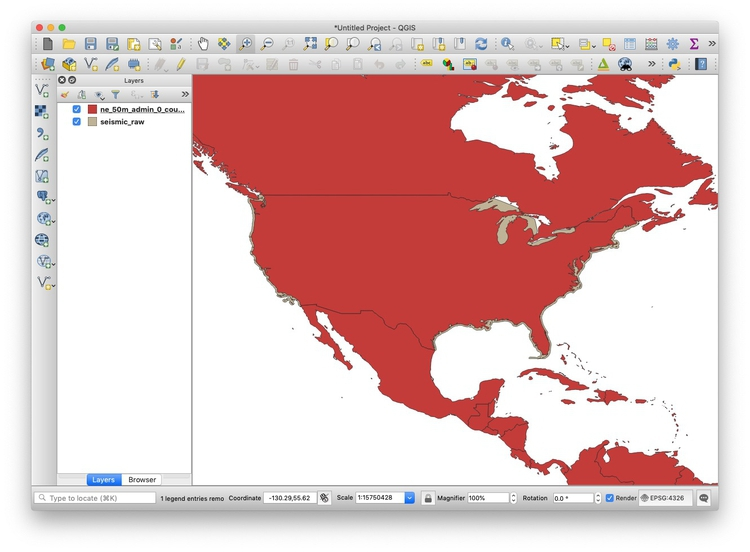
Turn off the visibility of the seismic_raw layer, turn on the visibility of the ne_50m_admin_0_countries_lake layer, select it in the Layers Panel, and click the Select feature(s) button:
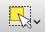
Now click anywhere within the borders of the United States to select the nation, which should now appear yellow:
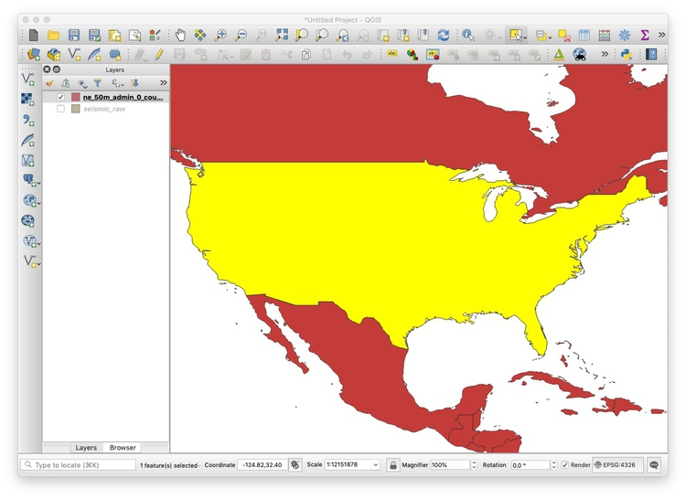
Select Vector>Geoprocessing Tools>Intersection from the top menu and fill in the dialog box as follows:
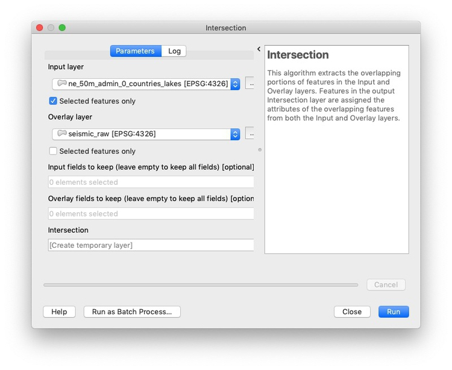
Click Run and a new layer will be created, clipped to coastline of the United States:
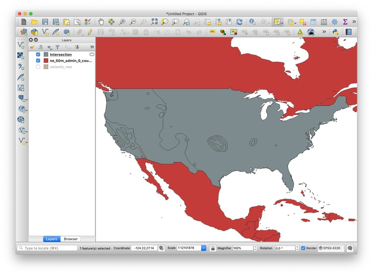
Its attribute table will contain data from both layers used for the intersection.
You can now right-click on the new Intersection layer and Save As ... as a shapefile, GeoJSON, or another geodata format.
Look at the other options in the Vector>Geoprocessing Tools menu. Their icons give a good idea of what they do. (Clip is similar to Intersection, except that it does not include data from both layers in the new attribute table.)
Now open a new project, and import the shapefile sf_test_addresses. I made this shapefile from the addresses we geocoded in week 9. I saved it in a Web Mercator projection, also known as EPSG:3857, commonly used for online maps.
This is important, because we are going to create a “buffer” defining areas within 1,000 feet of the nearest point. For this we need a projection with units defined in distance, rather than degrees, which is the unit for the WGS 84 datum.
To confirm the units for the Web Mercator projection, click on the button showing the CRS at bottom-right:
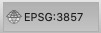
You should see that the CRS/projection information that appears near the bottom of the dialog box contains +units=m, which tells us that distances in this projection are measured in meters:
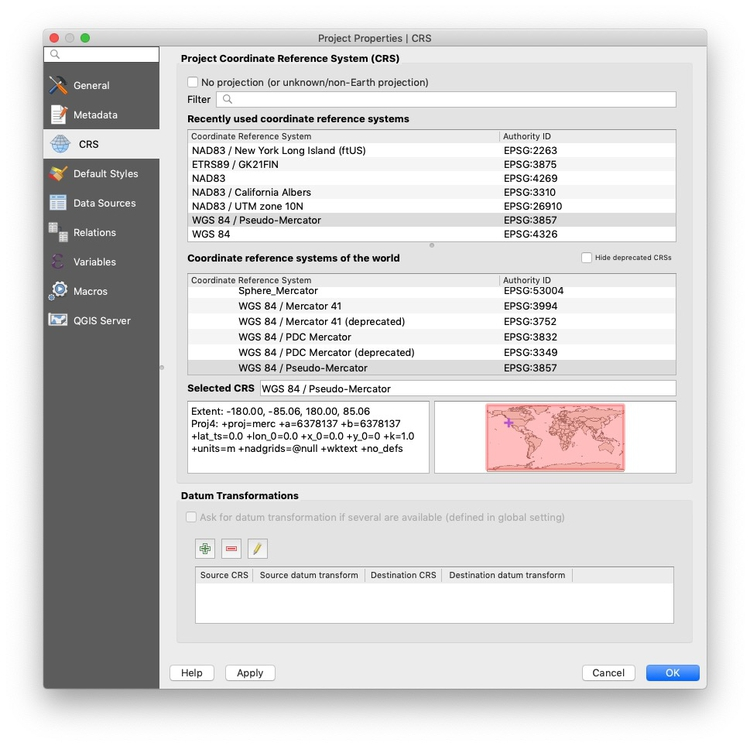
Creating a buffer shapefile is a task you might perform if, for example, working out which areas are off-limits for sex offenders under residency restrictions.
Select Vector>Geoprocessing Tools>Fixed distance buffer and fill in the dialog box as follows:
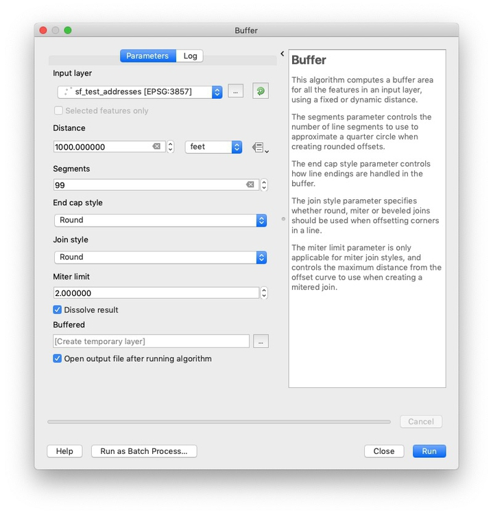
Selecting 99 under Segments to approximate ensures that the resulting shapes are as smooth circles. Checking Dissolve result merges overlapping buffers into the same polygon.
Click Run, and this should be the result:
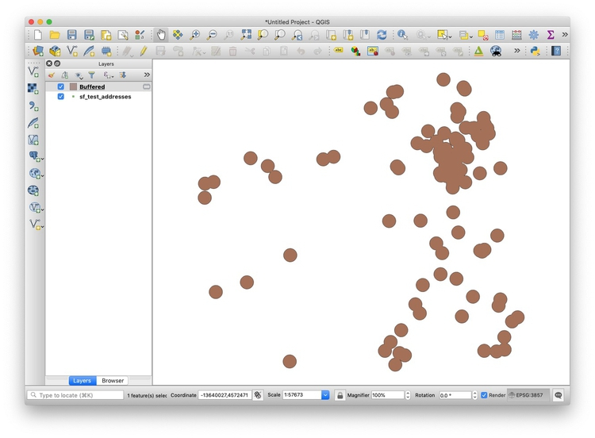
Again, you can now right-click on the new Buffer layer and Save As ... as a shapefile, GeoJSON, or another geodata format.
Assignment
File an update on progress with your final project. Pay particular attention to identifying problems/obstacles.
You can file the update as a markdown file in GitHub. Make sure that your GitHub repo is up to date with data, charts etc, so that I can sync with my version of your project and review your progress. The update should be sufficiently detailed that I can look at your repo and understand what you are doing.
If you are having trouble with GitHub, get in contact for a refresher.